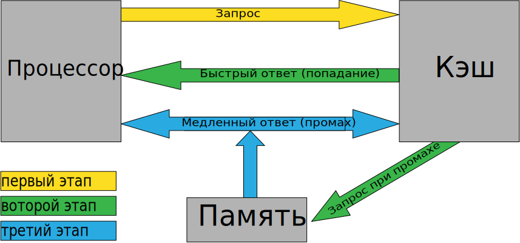
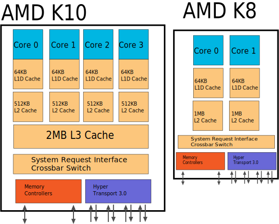

Во всех современных процессорах есть кэш (cache). Это разновидность памяти (кардинальные отличия кэша от ОЗУ — скорость работы и меньшая задержка доступа), которая является своего рода «буфером» между контроллером памяти и процессором и служит для увеличения скорости работы с ОЗУ. Каким образом? Чтобы объяснить, сразу откажемся от попахивающих детским садом сравнений, которые частенько встречаются в популяризаторской литературе на процессорную тематику (бассейны, соединённые трубами разного диаметра, и т.д. и т.п.). Всё-таки человек, который дочитал статью до этого места и не заснул (прим. ред. — а ведь авторы так старались!), наверное, способен выдержать и «переварить» чисто техническое объяснение, без бассейнов, кошечек и одуванчиков.
Итак, представим, что у нас есть много сравнительно медленной памяти (пусть это будет ОЗУ размером 1 мегабайт) и относительно мало очень быстрой (пусть это будет кэш размером всего 1 килобайт). Как нам с помощью этого несчастного килобайта увеличить скорость работы со всей памятью вообще? А вот здесь следует вспомнить, что данные в процессе работы программы, как правило, не бездумно перекидываются с места на место — они изменяются. Считали из памяти значение какой-то переменной, прибавили к нему какое-то число — записали обратно на то же место. Считали массив, отсортировали по возрастанию — опять-таки записали в память. Т.е. в каждый момент программа работает не со всей памятью, а, как правило, с относительно маленьким её фрагментом. Напрашивается решение — загрузить этот фрагмент в «быструю» память, обработать его там, а потом уже записать обратно в «медленную» (или просто удалить из кэша, если данные не изменялись). В общем случае, именно так и работает процессорный кэш: любая считываемая из памяти информация попадает не только в процессор, но и в кэш. И если эта же информация нужна снова, сначала процессор проверяет: нет ли её в кэше? Если есть (а современные кэши совершенны настолько, что это происходит в подавляющем большинстве случаев) — информация берётся оттуда, и обращения к памяти не происходит вовсе. Аналогично с записью: информация, если её объём влезает в кэш, пишется именно туда, и только потом, когда процессор закончил операцию записи, и занялся выполнением других команд, данные, записанные в кэш, параллельно с работой процессорного ядра «потихоньку» выгружаются в ОЗУ.

Говоря по-научному, кэш использует эффекты, которые называются временной и пространственной локальностью информации. Пространственная локальность означает, что несколько обращений к памяти подряд произойдут по адресам, скорее «близким» друг к другу, чем «далёким». Дело в том, что при чтении данных, которых не оказалось в кэше, процессор из памяти получает только их, а кэш дополнительно запрашивает себе ещё несколько десятков байт «вокруг». В результате, если первое обращение закэшировано, то, скорее всего, и для всех последующих также не потребуется обращаться к памяти. А временная локальность означает, что данные, к которым недавно обращались, скорее всего в течение ближайшего времени понадобятся ещё раз или много раз. Поэтому после удачного попадания в кэш (именно так это событие и называется — кэш-попадание, а отсутствие нужных данных в кэше — кэш-промах) информация там остаётся и даже получает больший «рейтинг популярности» (зачем — см. ниже).
Разумеется, объём данных, прочитанных и записанных за всё время работы программы — намного больше объёма кэша. Поэтому некоторые из них приходится время от времени удалять, чтобы в кэш могли поместиться новые, более актуальные. Самый простой из известных механизмов обеспечения данного процесса — отслеживание времени последнего обращения к данным, находящимся в кэше. Так, если нам необходимо поместить новые данные в кэш, а он уже «забит под завязку», контроллер, управляющий кэшем, смотрит: к какому фрагменту кэша не происходило обращения дольше всего (та самая «популярность»). Этот фрагмент и является первым кандидатом на «вылет», а на его место записываются новые данные, с которыми нужно работать сейчас.
Чтобы было понятно, насколько важен кэш, приведём простой пример: скорость обмена данными современного процессора с быстрейшим из своих кэшей (подробней — абзацем ниже) в 5-10 раз превосходит скорость его работы с памятью, а задержки меньше в 50 раз! Фактически, в полную силу современные процессоры способны работать только с кэшем: как только они сталкиваются с необходимостью прочитать данные из памяти — все их хвалёные гигагерцы просто простаивают. Опять-таки, простой пример: выполнение простейшей инструкции процессором происходит за 1 такт, т.е. за секунду он может выполнить такое количество простых инструкций, какова его частота (на самом деле еще больше, но это оставим на потом…). А вот время ожидания данных из памяти может в худшем случае составить более 200 тактов! Что делает процессор, пока ждёт нужные данные? А ничего не делает. Или, в лучшем случае, при наличии технологии гиперпоточности, переключается на другой поток команд, которому без кэша также плохо, как и этому.

Специфика конструирования современных процессорных ядер привела к тому, что систему кэширования в подавляющем большинстве CPU приходится делать многоуровневой. Кэш первого уровня (самый «близкий» к ядру) традиционно разделяется на две (как правило, равные) части: кэш инструкций (L1I) и кэш данных (L1D). Это разделение предусматривается так называемой «гарвардской архитектурой» процессора, которая по состоянию на сегодня является самой популярной теоретической основой для построения современных CPU. В L1I, соответственно, аккумулируются только команды (с ним работает декодер), а в L1D — только данные (они впоследствии, как правило, попадают во внутренние регистры процессора — обо всём этом см. ниже). Иерархически «над» L1 стоит кэш второго уровня — L2. Он, как правило, в 2-8 раз больше по объёму, примерно втрое медленнее, и является уже «смешанным» — там располагаются и команды, и данные. В первых многоядерных процессорах у каждого ядра были свои L1, но общий L2. Сегодня у каждого ядра есть свой L2, зато общим для всех ядер является L3 (кэш третьего уровня), который в 4-32 раза больше, чем L2, и ещё примерно втрое медленнее (но всё ещё быстрее памяти). Алгоритм работы с многоуровневым кэшем в общих чертах не отличается от алгоритма работы с одноуровневым, просто добавляются дополнительные итерации: сначала информация ищется в L1, если там промах — в L2, потом — в L3, и уже потом, если ни на одном уровне кэша она не найдена — идёт обращение к основной памяти (ОЗУ).
На самом деле, исполнительные блоки всех современных десктопных x86-процессоров вовсе не работают с кодом в стандарте x86. У каждого процессора есть своя, «внутренняя» система команд, имеющая мало общего с теми командами (тем самым «кодом»), которые поступают извне. В общем случае, команды, исполняемые ядром — намного проще, «примитивнее», чем команды стандарта x86. Чтобы процессор с точки зрения программиста или пользователя «внешне выглядел» как x86 CPU, существует декодер: этот блок отвечает за преобразование «внешнего» x86-кода во «внутренние» команды, исполняемые ядром (при этом достаточно часто одна команда x86-кода преобразуется в несколько более простых «внутренних»). Декодер является важной частью современного процессора: от его быстродействия зависит то, насколько постоянным будет поток команд, поступающих на исполняющие блоки. Ведь они не способны работать с кодом x86, поэтому будут ли они что-то делать или простаивать — во многом зависит от эффективности работы декодера.На самом деле, исполнительные блоки всех современных десктопных x86-процессоров вовсе не работают с кодом в стандарте x86. У каждого процессора есть своя, «внутренняя» система команд, имеющая мало общего с теми командами (тем самым «кодом»), которые поступают извне. В общем случае, команды, исполняемые ядром — намного проще, «примитивнее», чем команды стандарта x86. Чтобы процессор с точки зрения программиста или пользователя «внешне выглядел» как x86 CPU, существует декодер: этот блок отвечает за преобразование «внешнего» x86-кода во «внутренние» команды, исполняемые ядром (при этом достаточно часто одна команда x86-кода преобразуется в несколько более простых «внутренних»). Декодер является важной частью современного процессора: от его быстродействия зависит то, насколько постоянным будет поток команд, поступающих на исполняющие блоки. Ведь они не способны работать с кодом x86, поэтому будут ли они что-то делать или простаивать — во многом зависит от эффективности работы декодера.
Регистры — по сути, те же ячейки памяти, но «территориально» они расположены прямо в процессорном ядре. Разумеется, скорость работы с регистрами намного больше не только скорости работы с ОЗУ, но и с кэшами любого уровня. Поэтому большинство команд архитектуры x86 предусматривают осуществление действий именно над содержимым регистров, а не над содержимым памяти. Однако общий объём регистров процессора, как правило, очень мал — он не сравним даже с объёмом кэшей первого уровня и составляет всего сотни байт. Поэтому код программы (не на языке высокого уровня, а именно машинный) обычно содержит примерно такую последовательность операций: загрузить в регистры процессора информацию из ОЗУ, произвести некое действие над содержимым этих регистров, поместив результат туда же, в регистры, а потом снова выгрузить результат в основную память. Т.к. работа с памятью куда медленнее, было бы неплохо, чтобы объём данных в регистрах был больше — тогда промежуточные результаты вычислений можно целиком (или почти…) хранить в ядре, не обращаясь даже в кэш, что резко ускорит работу процессора. Однако увеличить размер или число регистров значительно сложнее, чем увеличить кэш и, тем более, нарастить объём памяти (это вообще любой продвинутый пользователь сделает). Тем не менее, примерно раз в 5-10 лет к стандартному на этот момент набору регистров добавляется ещё столько же новых, либо сами регистры удваиваются (а при введении x86-64 с целочисленными регистрами произошло и то, и другое).
Пройдя через все уровни кэша, декодер и некоторые подготовительные модули, команды наконец-то попадают в те блоки, ради которых вся эта катавасия и устраивалась: функциональные (исполняющие) устройства (ФУ). По сути, именно они и являются единственно необходимым элементом процессора. Можно обойтись без кэша — скорость снизится, но программы работать будут. Можно обойтись без декодера — исполняющие устройства станут сложнее, но работать процессор будет. Более того, у процессоров с системой команд концепции RISC (с точки зрения программиста, архитектура x86 к ней не отсносится, но для примера имеет смысл заметить) декодер отсутствует принципиально. А без функциональных устройств обойтись невозможно, ибо именно они исполняют операции над данными. Разных ФУ бывает много, но самые главные из них — арифметико-логические устройства (ALU), блоки вычислений с плавающей точкой (FPU), блоки векторной обработки (SIMD — таково общее название концепции векторных вычислений, означающее «одна команда, много данных») и блоки обмена данных с памятью. Каждое ФУ может исполнить только те команды, которые предназначены для него. Распределением команд, поступающих с декодера, по различным исполняющим устройствам занимается специальный блок-планировщик.
ALU (если не указано иное, то подразумевается именно целочисленный блок) традиционно отвечают за самые частые операции: простые арифметические действия (сложение, вычитание, сравнение) с целыми числами, логические операции («и», «или», «исключающее или» и «не»), копирование и простые преобразования чисел, а также битовые сдвиги. Блоков ALU в современных процессорах, как правило, 3. Для чего — вы поймёте позже, прочитав раздел «Суперскалярность и внеочередное исполнение команд». Внимательный читатель заметит, что выше не указаны ещё некоторые команды с целыми числами, которые, вроде бы должны быть исполнены в АЛУ. Например — умножение. Однако всё не так просто. Дело в том, что число и разнообразие функциональных устройств зависит от частоты встречи разных команд. Т.к. команды сложения, вычитания и копирования среди целых чисел наиболее «популярны», имеет смысл делать несколько АЛУ, исполняющих именно их, а вот целочисленное умножение, и, тем более, деление встречается куда реже, поэтому целочисленный умножитель почти во всех процессорах один (иногда — универсальный, в т.ч. и для вещественных чисел), а делителя нет вообще (эта операция делается в умножителе с использованием специальных таблиц констант для ускорения деления).
FPU занимается выполнением команд, работающих с числами с плавающей запятой, кроме того, традиционно на него «вешают всех собак» в виде дополнительных наборов команд для работы с векторными данными (MMX и SSE с разными цифрами) — независимо от того, работают они с числами с плавающей запятой, или с целыми. Этих ФУ также 3-4, но тут расклад сил несколько иной — как правило, каждый блок умеет делать копирование данных, но только 2 или 3 исполняют простые команды (как у целочисленного АЛУ — их иногда называют SIMD ALU или SSE ALU), только один — умножение и деление, и ещё один — всё остальное (перетасовки элементов вектора, сложные преобразования форматов данных и пр.).
* — по традиции русской математической школы, мы называем FPU «блоком вычислений с плавающей запятой», хотя буквально его название (Floating Point Unit) переводится как «…с плавающей точкой» — согласно американскому стандарту написания таких чисел.
Тут есть 3 вида модулей — 2-3 так называемых AGU или устройства генерации адреса, подготавливающие адрес операции обмена, и по одному блоку загрузки и сохранения (выгрузки), соединённых с кэшем данных первого уровня. Тут всё просто — готовим адрес, а затем либо пишем данные из регистра в кэш, либо наоборот — читаем из кэша в регистр.
Помимо вычислительных «наворотов», у современных CPU есть ещё и различные технологии для уменьшения потребления энергии. Причём это касается процессоров не только для мобильных устройств, но и для настольных ПК, и даже серверов. Дело в том, что уменьшение потребления электроэнергии также приводит к уменьшению тепловыделения, которое за последние годы сильно выросло — ещё 10 лет назад было трудно себе представить, что средний процессор будет потреблять электричества и выделять тепла под 100 ватт, а то и больше. Системы охлаждения всё чаще становятся слишком дорогими и шумными, притом, что это один из самых ненадёжных узлов компьютера, требующий регулярного ухода. А если охлаждение не справится — процессор (или другой чувствительный компонент) перегреется. О перегреве и защите от него уже сказано выше, но с некоторых пор не помогает и это, нужны дополнительные меры. Такими мерами стали технологии регулировки потребления энергии в зависимости от требуемой загрузки процессора. Для Intel это называется SpeedStep, для AMD — Cool'n'Quiet и PowerNow! (плюс номер версии).
Анализируя загрузку различных блоков и шин, контроллер энергосбережения может снизить их частоту работы (для компонентов, которые могут работать несинхронно) или приостановить тактирование полностью, а также указать материнской плате понизить питающее напряжение (тоже — не всего процессора, а отдельного ядра или блока, хотя и не каждого). Регулировка напряжений особенно эффективна, т.к. от него потребляемая и выделяемая мощность зависит больше. Однако и частота (за редкими исключениями) и напряжение не могут упасть до нуля: реально частота падает в 2-3 раза относительно максимума, а напряжение — процентов на 20-30. Т.е. даже при полном простое (чего в многозадачных ОС не бывает никогда) процессор всё равно будет потреблять несколько ватт, а особо энергоэффективные CPU для ноутбуков — доли ватта. Тем не менее, это на порядок меньше, чем в случае отсутствия энергосберегающих технологий. Разумеется, во всех современных материнских платах и ОС энергосбережение процессора поддерживается и включено по умолчанию. Что касается эффективности, то считается, что технологии AMD чуть отстают от Intel, но реальная разница скорее всего окажется околонулевой, т.к. процессор — не единственная часть компьютера. В частности, современная видеокарта «налегает на ватты» посильнее многих серверных CPU, даже если она в корпусе одна; аналогично и для ноутбуков.
Также заметим, что переход на новый технологический процесс при изготовлении микросхем (грубо говоря, он измеряется в нанометрах и определяет минимальный размер элемента на чипе) помимо возможности размещения большего числа транзисторов и ускорения их срабатывания также приводит и к уменьшённому энергопотреблению. Так что, например, одинаковые по устройству и частоте процессоры, изготовленные по 65-нанометровой и 45-нанометровой технологии, будут потреблять разное количество энергии — у второго будет чуть меньшее питающее напряжение и потребляемый ток. Процессор: ещё детальней